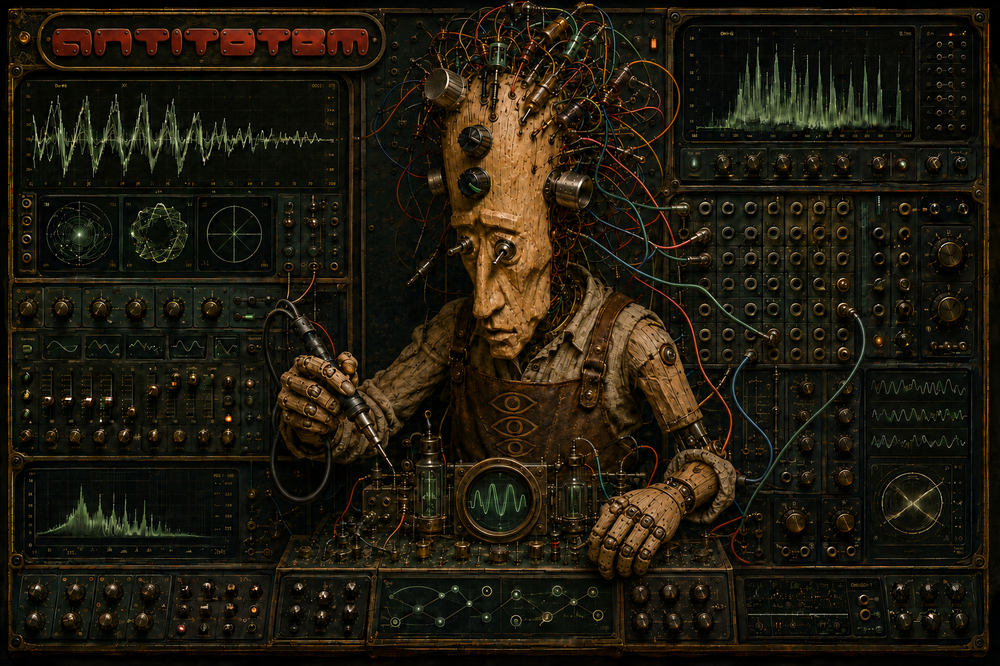

Objeto Sonoro
Instrumento independiente JUCE/C++20, modular, precursor y patrono de la familia RASGO. Cinco osciladores, escáner de 16 pasos, ADSR, VCF multimodo, ruidos y S&H, retornos, efectos, mezclador, osciloscopio permanente y grabación WAV/MIDI/MusicXML.

Requisitos mínimos
Antitotem hoy se ejecuta desde el código fuente; no hay binario publicado. Los requisitos
siguientes cubren tanto ejecutar un paquete .deb construido localmente como
compilar desde cero.
Sistema
Linux (probado en Debian/Ubuntu, amd64) — paquete .deb instalado y
abierto de verdad. Windows y macOS: build e instalador ya generados automáticamente
vía CI, pero todavía no abiertos en un Windows/macOS real — ver la nota abajo.
Para compilar
- CMake ≥ 3.22
- Compilador C++20 (GCC/Clang)
- Copia local de JUCE
- Dispositivo de audio (ALSA/PipeWire)
Para instalar el .deb
libasound2,libfontconfig1,libfreetype6libx11-6,libxext6,libxss1libgio-2.0-0,libstdc++6,libc6
Instalación
Obtener el código
git clone https://github.com/lucioaraujo/antitotem.git y entra en
el directorio.
Compilar y ejecutar directamente
El camino más simple para uso inmediato — compila y abre la versión actual:
./run_antitotem.shO generar el paquete .deb
cmake -S . -B build -DCMAKE_BUILD_TYPE=Release \
-DANTITOTEM_JUCE_PATH=/ruta/a/JUCE
cmake --build build --target AntitotemSimpleSequencerApp -j
cd build && cpack -G DEB
sudo dpkg -i antitotem-0.1.0-Linux.deb
sudo apt-get install -f # si falta alguna dependenciaWindows (NSIS/.exe) y macOS (DragNDrop/.dmg): ya
disponibles para descargar en la
release antitotem-v0.1.0,
junto al .deb de Linux — generados y probados vía
GitHub Actions
en runners Windows/macOS reales. Los instaladores compilan limpio, pero todavía no fueron
abiertos en un Windows o macOS real (el repositorio es privado, el enlace exige una
cuenta de GitHub con acceso). Guía completa, con todos los detalles y solución de
problemas, en el
INSTALL.md.
Procedencia
Este directorio reúne el prototipo digital actual y la documentación de una investigación inspirada en la práctica material del Antitotem original — instrumento de hardware autoral, modular, CMOS/discreto, construido en 2013. El acervo histórico permanece separado y no es sustituido por este código.
Créditos
Autoría
Lúcio Araújo — concepción, DSP, interfaz y todo el código de este prototipo.
Origen
Antitotem 2013: instalación sonora urbana seleccionada por el edicto nº 090/12 (Investigación y Producción en Arte Digital) de la Fundação Cultural de Curitiba, con apoyo del Fondo Municipal de Cultura.
Framework
JUCE (audio, interfaz y app) — dependencia de doble licencia AGPLv3/comercial; este proyecto usa la vía AGPLv3.
Licencia
Código bajo AGPLv3 o posterior. Esquemas e imágenes de investigación citados en la lista completa mantienen sus propios derechos y no se distribuyen con este repositorio.